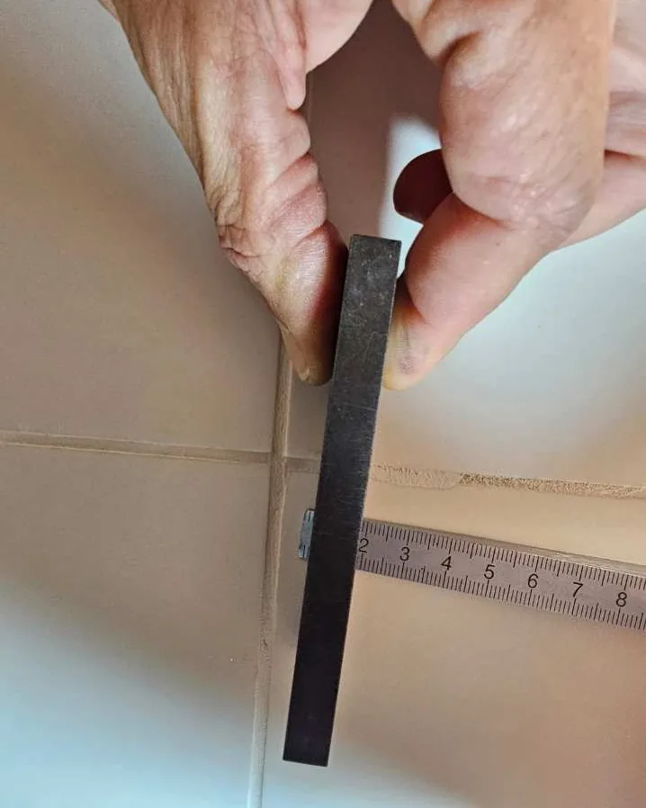
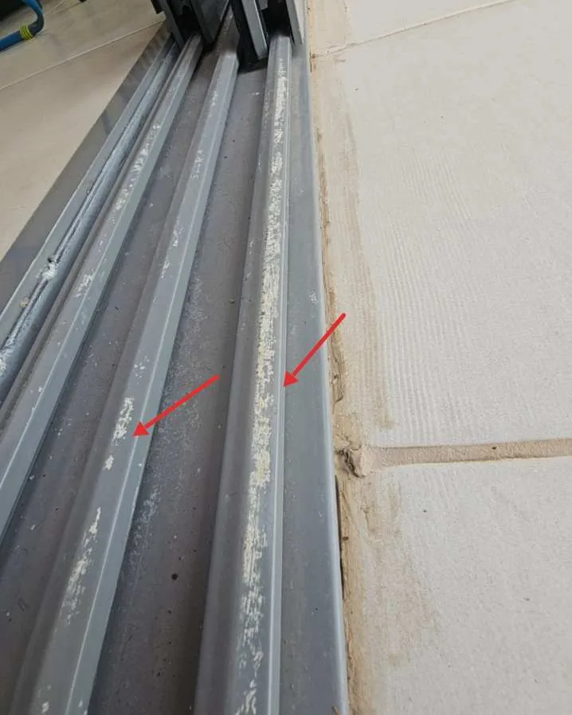
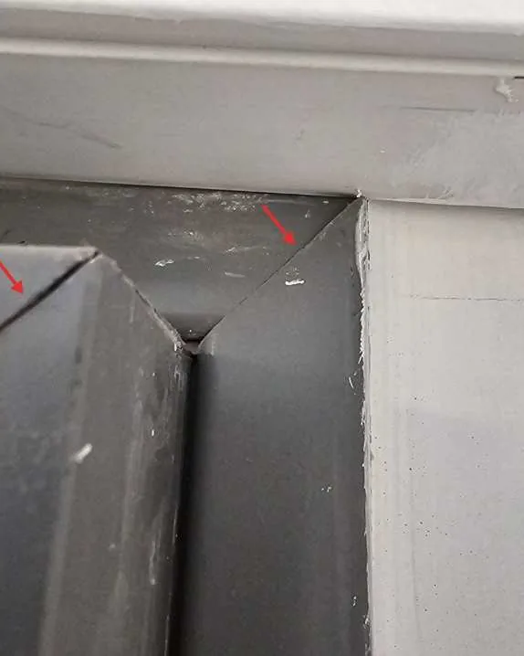
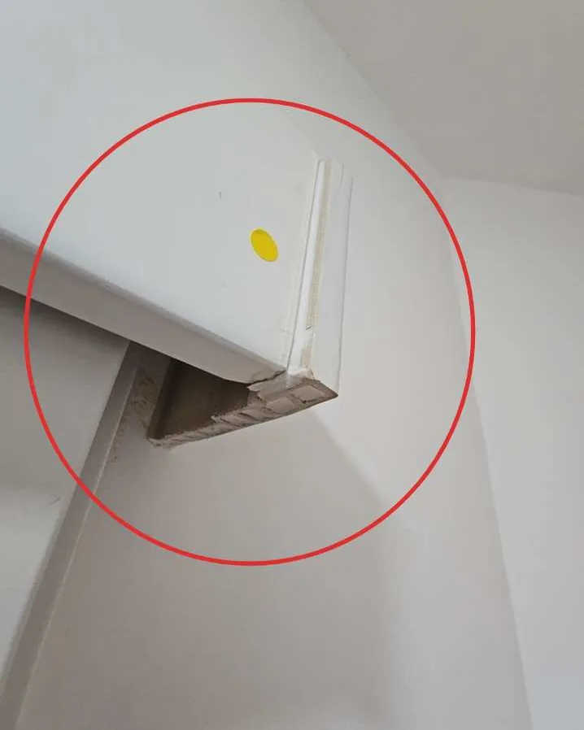
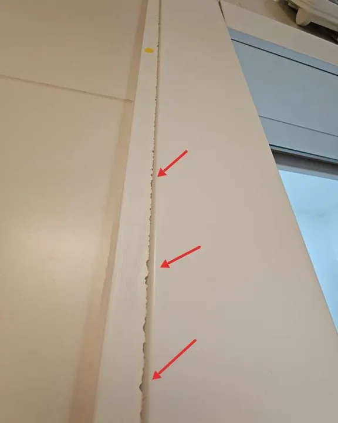

ליקוייםמהשטח
ממצאים מחוות דעת הנדסית שרביד ערך: מה נמדד, מה קובע התקן ומה הומלץ. הצילומים מהבדיקה עצמה, בלי פרטים מזהים.
- הבדיקה
- ויזואלית ולא הורסת, עם ציוד מדידה
- בכל סעיף
- ממצא, מסקנות וסעיף התקן, המלצה, תמחור ותמונות
- תמחור
- לפי מחירון דקל, לפני מע״מ וכולל מע״מ
- נספחים
- סעיפי התקנים שעליהם נשען כל ממצא
מודדים, לא מתרשמים

סטייה של 13 מ״מ מהאנך בטיח של קירקרן לייזר אנכית היא קו הייחוס, והמרחק לקיר נמדד בזוויתן בשלושה גבהים, לפי שיטת הבדיקה בת״י 1920 חלק 2. בקיר עד 3 מ׳ התקן מתיר סטייה ממוצעת של 10 מ״מ.המלצה: להסיר את הטיח באזורים החורגים, לטייח מחדש ולצבוע. 
גליות בטיח: מרווח של 6 מ״מפלס של 1 מ׳ צמוד לקיר, והמרווח הגדול ביותר נמדד בטריז. ת״י 1920 חלק 2 מתיר 5 מ״מ.המלצה: ליישר את פני הטיח באזורים החורגים, ואחר כך לצבוע. 
הפרש גובה בין אריחים סמוכים בחיפוינמדד בטריז מדידה ליד המקלחון. ת״י 1555 חלק 2 מתיר הפרש של עד 1.5 מ״מ.המלצה: להחליף את האריחים באזור, במישור אחד עם האריחים הסמוכים. 
חופש של כ־8 מ״מ בכנף ויטרינה סגורה ונעולההמותר: 4 מ״מ. הכנף יוצרה קצרה מהפתח, והמרווח פוגע באטימות ומביא שריקה ברוח חזקה.המלצה: לייצר ולהתקין כנף חדשה במידות הפתח, ולבדוק פתיחה, נעילה וחופש.
ליקויים, כפי שסומנו בחוות הדעת

רטיבות בסינר הגבס בתקרת חדר הרחצההמים חדרו דרך איטום לקוי סביב תריס הוונטה בקיר החוץ, והרטיבות חזרה בכל חורף. ת״י 2752 דורש שלא יהיו כתמי לחות בצד היבש.המלצה: לאטום מחדש את היקף התריס ולהוסיף גגון מעליו, ורק אחר כך לתקן גבס, טיח וצבע. 
נקב בפני אריח גרניט פורצלןפגם ייצור, שהיה שם כבר מתחילת השימוש. לפי ת״י 314, באריח סוג א׳ לא מותרים נקבים או בועות אוויר בפני האריח.המלצה: להחליף את האריחים הפגומים באריחים מאותו דגם וגוון, ולמלא מחדש את המישקים. 
פגיעות ושאריות חומרי בנייה במסילת הוויטרינהפגיעות מכניות ושאריות מליטה במסילה התחתונה. ת״י 4068 חלק 1 קובע בדיקות למוצר אחרי ההתקנה.המלצה: להסיר את השאריות, לנקות את המסילה ולהחליף רכיבים פגועים. 
מפגשי פרופילים לא מהודקים בפינת המלבןת״י 1068 חלק 2 קובע איך מחברים ואוטמים את הפרופילים בפינות.המלצה: לעבד מחדש את מפגשי הפרופילים ולאטום אותם. 
ארגז עליון מאולתר בדלת הזזהקצה הארגז נסגר בחלק פרופיל שנחתך במקום, עם שפת חיתוך חשופה וברגים גלויים. ת״י 23 חלק 5 דורש מכלל מוגמר מהמפעל.המלצה: להחליף את הארגז העליון כולו בארגז שמיועד לדלת, בגימור זהה. 
הלבשת דלת שהתנתקה מהקירההלבשה לא קובעה כנדרש, ולאורך השפה יש פגמים. לפי ת״י 23 חלק 2, סרגל הכיסוי יהיה בלי פגמים.המלצה: להחליף את ההלבשות בחדשות תואמות ולקבע אותן לקיר.

מצאתם משהו דומה?
שלחו תמונה ופרטים בוואטסאפ, ורביד יגיד אם צריך בדיקה, ואיזו.
לתיאום בוואטסאפ054-756-0711krudo.handasa@gmail.com
מעלה אבשלום 65, קריית טבעון · בודקים בצפון, עד כ־50 ק״מ מקריית טבעון